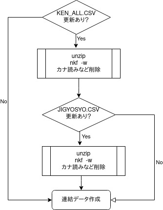

郵便番号・住所の簡易検索スクリプト
1 つくったわけ
2021年の年末に年賀状の宛名データが壊れました1。 その復旧作業をやっているときに、 郵便番号と住所のどちらからでもお互いにコマンドラインで検索できる道具が欲しくなりました2。
そこで大急ぎで作ったのが postal-coder.sh 。
とても単純 素朴ですが、
とりあえずこれで過去3年間の年賀状をめくりながら、
宛名ファイル（CSV）を作り直し3、なんとか宛名印刷を完了することができました4。
宛名印刷が終わった後、
日本郵便の郵便番号データは月に1回のペースで更新されることを知りました。
そこで毎月1回、定期的に郵便番号データをダウンロードし
postal-coder.sh に合った形式にデータを整形するスクリプト fabr-postalcode-DB.sh を作りました。
その2本のスクリプトの概要を紹介します。
2 スクリプト
3 postal-coder.shスクリプト
3.1 使用例
ターミナル上では郵便番号出力は<span style="color:red">赤字</span>で表示されます。
3.1.1 住所 → 郵便番号
$ postal-coder.sh 緑区鴨居 2260003 神奈川県横浜市緑区鴨居 2260004 神奈川県横浜市緑区鴨居町
検索語の住所にヒットする住所が複数あれば全部表示します。うっかり「東京都」と入力すると破滅的な数の行が表示されます(やってみたら 4046行 ！) :sweat:
データ中にヒットする住所が無ければ
** Not found. Do it agin. を表示して停止します。
3.1.2 郵便番号 → 住所
$ postal-coder.sh 7290111 7290111 広島県福山市今津町
データに存在しない郵便番号の場合には ** Not found. Do it agin. を表示して停止します。
3.1.3 事業所名 → 郵便番号・住所
#+beginsrc shell $ postal-coder.sh 培風館 1028260 株式会社 培風館 東京都千代田区九段南４丁目３−１２ #+endshell 支店・支社が複数あれば、それらも全部表示します。
3.1.4 郵便番号 → 事業者名
$ postal-coder.sh 2148580 2148580 学校法人 専修大学 神奈川県川崎市多摩区東三田２丁目１−１
3.1.5 応用問題（おまけ）
（Ex.1）虎ノ門ヒルズ３５階の郵便番号を知りたい：
$ postal-coder.sh 虎ノ門ヒルズ | grep ３５ 1056435 東京都港区虎ノ門虎ノ門ヒルズビジネスタワー（３５階） 1056335 東京都港区虎ノ門虎ノ門ヒルズ森タワー（３５階）
虎ノ門ヒルズには「ビジネスタワー」と「森タワー」があったんですね :sweat:
日本郵便のDBでは数字はすべて 全角数字 が使われています。 grep する際には、上のようにハナから全角文字で検索するか、次のように nkf -Z のひと手間かけて半角化しましょう。
$ postal-coder.sh 虎ノ門ヒルズ | nkf -Z | grep 35 1056435 東京都港区虎ノ門虎ノ門ヒルズビジネスタワー(35階) 1056335 東京都港区虎ノ門虎ノ門ヒルズ森タワー(35階)
4 fabr-postalcode-DB.shスクリプト
このスクリプトでは
毎月1回、cronで事業所名データ（ jigyosyo.zip ）と全国郵便番号データ( ken_all.zip )に更新があったかどうかをチェックします。
もし更新があったら、
zipファイルをダウンロードして解凍し、 postal-coder.sh スクリプトで使えるように整形して保存します。全国郵便番号データ( ken_all.zip )は 1.7MB 、事業所名データ( jigyosyo.zip )は 0.7MB 程度なので、回線的にもそれほど大きな負担はないと思います。
2022年1月5日には事業所名データ（ jigyosyo.zip ）にも 全国郵便番号データ( ken_all.zip )にも更新が無かったことを示すメッセージがログに残っていました。
（log-JIGYOSHO.txt） $ cat log-JIGYOSHO.txt --2022-01-05 21:02:01-- https://www.post.japanpost.jp/zipcode/dl/jigyosyo/zip/j igyosyo.zip www.post.japanpost.jp (www.post.japanpost.jp) をDNSに問いあわせています... 43.25 3.212.144 www.post.japanpost.jp (www.post.japanpost.jp)|43.253.212.144|:443 に接続していま す... 接続しました。 HTTP による接続要求を送信しました、応答を待っています... 304 Not Modified ファイル `/home/yamagami/Dropbox/郵便番号/jigyosyo.zip' はサーバ側で変更されてい ませんでした。ダウンロードを省略します。
アップデートがなければほとんど何もせずスクリプトは終わります（図1）。
（完）
5 参考資料（ postal-coder.sh コード）
緊急避難的なコードですがとりあえず自家用には動いています。変なところ、小ぎれいにしたいところもたくさんありますが、それは後ほどということであしからず・・・。
5.1 postal-coder.sh
#!/bin/bash # Postal-coder.sh # 郵便番号 => 住所 # 住所 => 郵便番号・住所 # 事業所名 => 郵便番号・住所 if [ $# = 0 ]; then read -rp "住所/郵便番号/事業者名を入力してください： " keyin else keyin=$1 fi # keyinに半角ハイフンが含まれていたら削除 keyin=${keyin/-/} # # 入力判定（郵便番号 or 住所/事業所名) # if [[ "${keyin}" =~ ^[0-9]+$ ]]; then # keyinが数字のみかどうか # keyinの桁数をチェック ７桁限定 if [ ${#keyin} != 7 ]; then echo "** 郵便番号の桁数は7です." exit 0 fi ## 郵便番号から 住所/事業所名を得る # all_japan_file=$HOME/郵便番号/ALL-JAPAN.csv # zipcode="${keyin}" adrs=$(grep ${zipcode} ${all_japan_file} ) adrs_only=$(echo ${adrs} |cut -c 8-) # if [ -n "${adrs}" ]; then echo -e "\e[31m${zipcode}\e[m ${adrs_only}" exit 0 else echo '** 郵便番号 not found. Do it agin.' exit 0 fi fi # ## 住所/事業所名から 郵便番号 # ippan_file=$HOME/郵便番号/essential-ippan.csv jigyosho_file=$HOME/郵便番号/essential-jigyosho.csv # 一般住所データから検索 grep "${keyin}" "${ippan_file}" > ./tmp-ippan-koho.txt if [ -s ./tmp-ippan-koho.txt ]; then # while read line do zipcode=$(echo "${line}" | cut -b 1-7) adrs_koho=$(echo "${line}" | cut -b 8-) echo -e "\e[31m${zipcode}\e[m ${adrs_koho}" done < ./tmp-ippan-koho.txt rm ./tmp-ippan-koho.txt exit 0 else grep "${keyin}" "${jigyosho_file}" > ./tmp-jigyosho-koho.txt # ####### 事業所にデータがある場合 if [ -s ./tmp-jigyosho-koho.txt ]; then # while read line do zipcode=$(echo "${line}" | cut -b 1-7) adrs_koho=$(echo "${line}" | cut -b 8-) echo -e "\e[31m${zipcode}\e[m ${adrs_koho}" done < ./tmp-jigyosho-koho.txt rm ./tmp-*.txt exit 0 fi # 作業ファイル削除 rm ./tmp-*.txt fi # # 入力 みつからず # echo '** 入力データ not found. Do it again.' exit 0
5.2 fabr-postalcode-DB.shのフローチャート

図1: fabr-postalcode-DB.sh のフローチャート
6 Footnotes:
脚注:
バックアップはとってありましたが、CSVフォーマットで2019年のものしか残っていませんでした。
市販の住所録・宛名印刷ソフトでは備わっているのが当たり前のありきたりな機能です。けど重たいアプリを起動したり、ウエッブページを開いて検索したりするのは（若者言葉では）「だるい」。たかが郵便番号と住所ですから・・・。
宛名データがとりあえず復旧した後に、そのデータについて郵便番号と住所が一致しているかどうかをチェックする作業を行いました。スクリプトにするほどでもなく、ワンライナーですが、注意深く入力した積りでもタイプミスがあることを改めて思い知らされました。
残っていたCSVファイルをEmacsのCSVモードで読み込み、それに追記・修正を加えるという形で行いました。復旧したデータも当然CSVです。なお宛名の印刷途中で自宅のインクジェット プリンタ＝Canon iP7230 (2012年製)が B200 エラーを吐いて止まるというシリアスなトラブルが発生。これも何とか迂回して、やっとこさで印刷が終わりました。今年の年賀状発送はほんとうに大変でした :sweat: